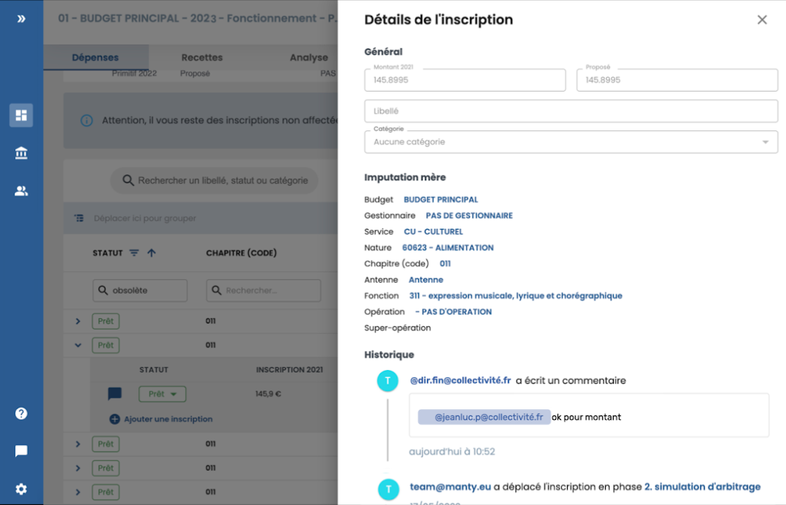
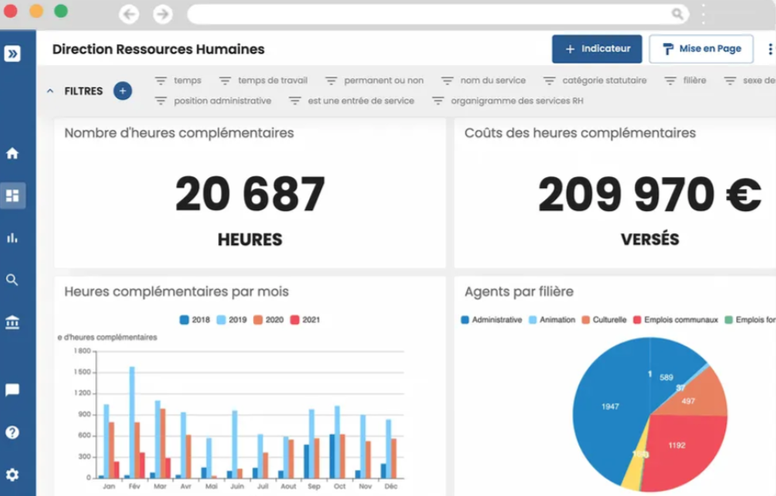
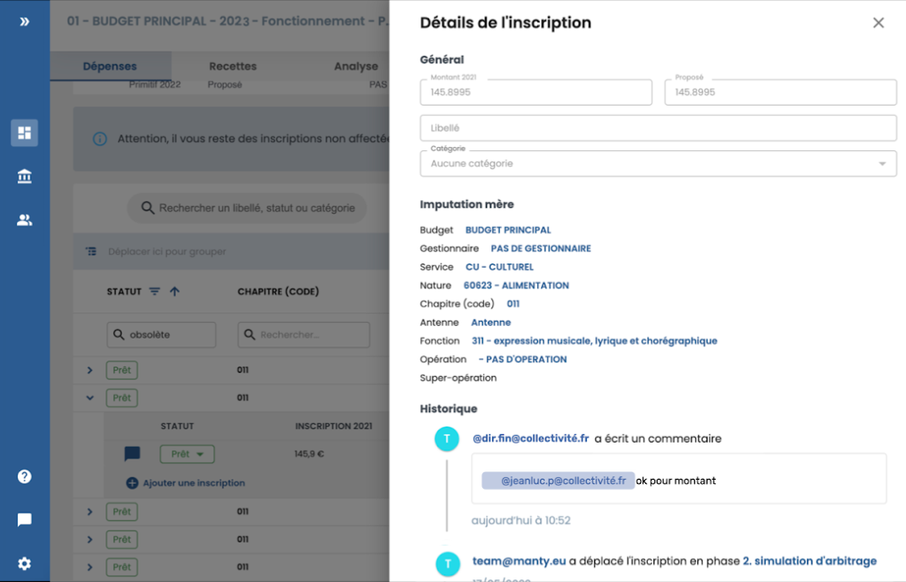
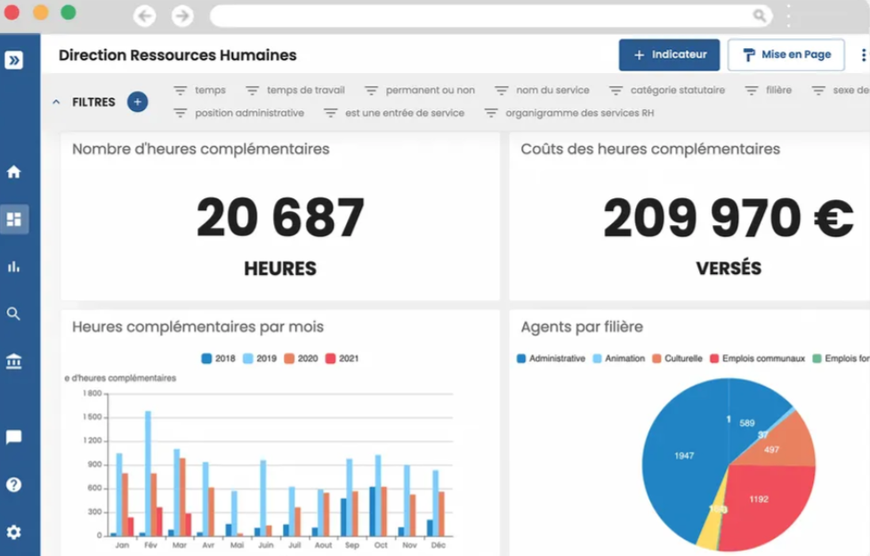

Optimisation des Processus et Prise de Décision Informatisée : Projet Manty dans le Secteur Public


 



Mise en Place d'une Plateforme de Gestion de Données Transversale pour l'Optimisation des Administrations
- Categorie:Gestion de Données pour le Secteur Public
- Pour: :Mairie de Montrouge
La mise en place d'une plateforme transversale comme Manty, visant à couvrir divers aspects de l'organisation à travers quatre directions principales, présente plusieurs avantages :
- Centralisation des Données : La plateforme permet de centraliser et de consolider des données provenant de différentes sources, offrant ainsi une vision globale de l'organisation.
- Amélioration de la Collaboration : En intégrant des processus et des données à travers les différentes directions, la plateforme favorise la collaboration entre les équipes et les départements, renforçant ainsi la communication interne.
La plateforme Manty vise à créer une infrastructure qui non seulement simplifie les opérations techniques, mais qui favorise également une approche holistique de la gestion des données, de la collaboration interne, et de la prise de décision au sein de l'organisation.
Installation Technique
Installation de la Machine Virtuelle
- - Téléchargez l'image ISO d'Ubuntu depuis le site officiel.
- - Installez un logiciel de virtualisation tel que VirtualBox.
- - Créez une nouvelle machine virtuelle dans VirtualBox.
- - Configurez les paramètres de la machine virtuelle (mémoire, CPU, etc.).
- - Montez l'image ISO d'Ubuntu pour démarrer l'installation.
- - Suivez les étapes d'installation d'Ubuntu.
- - Configurez le système d'exploitation fraîchement installé.
Mise en Place des Accès SSH
- - Installez le serveur SSH sur la machine virtuelle.
- - Configurez les clés SSH pour les connexions sécurisées.
- - Testez la connexion SSH depuis un autre ordinateur.
Mise en Place des Extracteurs
- - Identifiez les bases de données cibles.
- - Créez des comptes en lecture seule pour accéder aux bases de données.
- - Si nécessaire, contactez les éditeurs des bases de données pour obtenir les autorisations d'accès.
- - Copiez les identifiants nécessaires sur la machine virtuelle.
Création de Comptes en Lecture Seule :
- - Identification des bases de données cibles.
- - Définition des privilèges en lecture seule.
- - Le prestataire crée des comptes dédiés avec les privilèges nécessaires.
Coordination avec les Éditeurs :
- - Le prestataire contacte les éditeurs pour obtenir les autorisations nécessaires.
- - S'assurer de disposer des informations et des accès requis pour l'extraction.
Configuration des Extracteurs :
- - Installation et configuration par le prestataire, en tenant compte des spécifications du projet.
- - Tests de compatibilité avec les différentes sources de données.
Tests d'Extraction :
- - Le prestataire effectue des tests pour garantir une extraction précise et fiable.
- - Correction des problèmes identifiés lors des tests.
Documentation et Rapports :
- - Fourniture d'une documentation détaillée sur la configuration des extracteurs et la gestion des comptes d'accès.
- - Soumission de rapports d'intégration détaillés, récapitulant les étapes effectuées et les problèmes résolus.
Déploiement de la Plateforme
- - Le prestataire déploie la plateforme sur le domaine collectivite.manty.eu.
Création des Comptes Administrateurs :
- - Mise en place des comptes administrateurs pour la gestion de la plateforme.
Lancement des Premières Extractions :
- - Les premières extractions sont initiées pour tester la collecte initiale des données.
Vérification et Réglages :
- - Vérification de la performance globale et ajustements si nécessaire.
Lancement et Cadrage
Présentation de Manty et de la Plateforme :
- Introduction détaillée à Manty et à ses fonctionnalités.
- Présentation de la plateforme aux parties prenantes.
Définition des Objectifs du Projet et des Résultats Attendus :
- Discussion approfondie pour définir clairement les objectifs du projet.
- Identification des résultats attendus à court et à long terme.
Désignation des Référents Métiers :
- Nomination des référents métiers pour chaque domaine intégré.
- Attribution de rôles spécifiques et responsabilités pour assurer une collaboration efficace.
Validation du Calendrier :
- Confirmation du calendrier de mise en œuvre.
- Revue et ajustement si nécessaire.
Planification de la Formation Initiale :
- Discussion sur la planification des sessions de formation initiale.
- Identification des groupes d'utilisateurs clés pour la première formation.
Étapes Post-Déploiement :
- Définition des premières étapes après le déploiement de la plateforme.
- Préparation de la communication interne pour informer les utilisateurs du lancement imminent.
Validation des Livrables :
- Identification des livrables attendus à chaque étape du projet.
- Établissement des critères de validation pour chaque livrable.
Séance de Questions et Réponses :
- Temps dédié pour répondre aux questions des parties prenantes.
- Clarification des points spécifiques liés au lancement du projet.
Validation des Données & Prise en Main
1ère Réunion de Conception
- Recueil des besoins et définition des indicateurs
- Spécification des indicateurs prioritaires
2ème Réunion de Conception
- Paramétrage des correspondances sur la plateforme
- Validation des valeurs des indicateurs
3ème Réunion de Conception
- Construction/Personnalisation des indicateurs et tableaux de bord
- Prise en main de l’outil
Recettages
Mise en Parallèle des Objectifs de Cadrage et du Travail Réalisé :
- Comparaison des résultats obtenus avec les objectifs définis lors du cadrage.
- Analyse approfondie pour s'assurer que le projet est aligné sur les attentes.
Recueil des Retours :
- Ouverture d'une session de recueil de retours auprès des parties prenantes.
- Analyse des retours utilisateur et des retours des référents métiers.
Alignement sur la Suite du Projet :
- Discussion sur les prochaines étapes après le recettage.
- Évaluation des ajustements nécessaires en fonction des retours et des résultats.
Volontés de Déploiement :
- Clarification des préférences concernant le déploiement à plus grande échelle.
- Discussion sur les éventuelles adaptations ou personnalisations pour répondre aux besoins spécifiques.
Formations Supplémentaires :
- Identification des besoins en formation supplémentaire.
- Planification de sessions de formation pour les nouveaux utilisateurs ou les fonctionnalités avancées.
Besoins de Suivi d’Indicateurs :
- Discussion sur les indicateurs clés de performance (KPI) à suivre.
- Identification des besoins spécifiques en rapports et analyses.
Réajustement du Calendrier :
- Si nécessaire, ajustement du calendrier en fonction des conclusions du recettage.
- Révision des échéances pour refléter les changements apportés.
Planification des Prochaines Réunions :
- Fixation de dates pour les prochaines réunions de suivi.
- Définition des thèmes à aborder dans les réunions suivantes.
Comités de Pilotage
Échange Régulier pour Recueillir les Retours :
- Organisation de réunions périodiques pour recueillir les retours des parties prenantes.
- Analyse des performances du projet et des expériences utilisateur.
Discussion des Nouveaux Besoins :
- Ouverture d'un forum de discussion pour présenter et discuter des nouveaux besoins.
- Identification des fonctionnalités ou améliorations prioritaires.
Prise de Décisions Importantes :
- Discussion et prise de décisions sur les sujets critiques pour le projet.
- Clarification des points de blocage et planification des solutions.
Fixation des Orientations Stratégiques :
- Définition des orientations stratégiques à court et à long terme.
- Alignement des objectifs du projet avec la vision globale de l'organisation.
Évolution du Projet :
- Discussion sur les éventuelles évolutions du projet en fonction des retours et des besoins identifiés.
- Planification des étapes futures pour maintenir la pertinence du projet.
Évaluation des Performances :
- Analyse des KPI et des métriques de performance.
- Ajustements stratégiques en fonction des résultats obtenus.
Communication Interne :
- Communication régulière des décisions prises lors des comités de pilotage à l'ensemble de l'équipe projet.
- Diffusion des orientations stratégiques au sein de l'organisation.
Réajustement des Plans :
- Si nécessaire, ajustement des plans et des priorités en fonction des discussions du comité de pilotage.
- Révision des feuilles de route et des calendriers.
Planification des Prochains Comités :
- Fixation des dates pour les prochains comités de pilotage
Déploiement
Partage des Tableaux de Bord :
- Mise en place d'une stratégie de partage des tableaux de bord.
- Attribution des droits d'accès appropriés pour assurer une visibilité sélective des données.
Création de Nouveaux Comptes :
- Identification des nouveaux utilisateurs nécessitant l'accès à la plateforme.
- Création de comptes utilisateur en fonction des rôles et des responsabilités définis.
Automatisation de l'Envoi de Rapports :
- Configuration de l'automatisation de l'envoi de rapports périodiques.
- Personnalisation des paramètres d'envoi en fonction des préférences des utilisateurs.
Formation aux Nouveaux Utilisateurs :
- Organisation de sessions de formation pour les nouveaux utilisateurs.
- Présentation des fonctionnalités principales et des méthodes d'utilisation des rapports.
Feedback des Utilisateurs :
- Mise en place d'un mécanisme de feedback pour recueillir les impressions des utilisateurs sur les tableaux de bord et les rapports automatisés.
- Analyse des retours pour apporter des améliorations si nécessaire.
Personnalisation des Comptes Utilisateurs :
- Encouragement de la personnalisation des comptes utilisateurs en fonction des besoins individuels.
- Assistance pour ajuster les paramètres et les préférences.
Évolution de la Stratégie de Partage :
- Évaluation périodique de la stratégie de partage en fonction de l'évolution des besoins.
- Ajustement des droits d'accès en conséquence.
Optimisation des Processus :
- Analyse continue des processus de déploiement et de partage.
- Identification des possibilités d'optimisation pour améliorer l'efficacité.
Documentation des Procédures :
- Mise à jour de la documentation des procédures pour refléter les changements apportés lors du déploiement.
- Disponibilité d'une référence claire pour les utilisateurs.
Suivi Post-Déploiement :
- Mise en place d'un suivi post-déploiement pour résoudre rapidement les problèmes éventuels.
- Organisation de sessions de support pour répondre aux questions des utilisateurs.
Formations aux Services
Présentation de Manty et de la Plateforme :
- Session d'introduction à Manty et à ses objectifs.
- Présentation des principales caractéristiques de la plateforme.
Présentation des Tableaux de Bord avec les Référents Métier :
- Réunion dédiée à la présentation des tableaux de bord spécifiques à chaque référent métier.
- Explication des indicateurs clés pertinents pour chaque service.
Présentation des Fonctionnalités Principales :
- Exploration détaillée des fonctionnalités principales de la plateforme.
- Mise en avant des capacités clés pour optimiser l'utilisation.
Animation d’un Atelier :
- Session interactive pour permettre aux utilisateurs de manipuler la plateforme en temps réel.
- Exercices pratiques pour renforcer la compréhension.
Accompagnement dans la Prise en Main :
- Assistance personnalisée pour aider les utilisateurs à naviguer dans la plateforme.
- Réponse aux questions individuelles et résolution des problèmes rencontrés.
Formation Continue :
- Mise en place d'un programme de formation continue pour aborder des fonctionnalités avancées.
- Formation adaptée aux besoins évolutifs des utilisateurs.
Retours et Évaluations :
- Collecte des retours et évaluations des participants après chaque session de formation.
- Analyse des retours pour ajuster les futurs programmes de formation.
Documentation et Ressources :
- Fourniture de documentation complémentaire pour un apprentissage autonome.
- Mise à disposition de ressources en ligne pour répondre aux questions fréquentes.
Sessions de Questions et Réponses :
- Organisation régulière de sessions de questions et réponses pour résoudre les problèmes en temps réel.
- Forum interactif pour partager les bonnes pratiques entre les utilisateurs.
Certification des Utilisateurs :
- Possibilité de mettre en place un programme de certification pour les utilisateurs avancés.
- Reconnaissance des compétences acquises dans l'utilisation de Manty.
Suivi Individuel :
- Propose un suivi individuel pour les utilisateurs ayant des besoins spécifiques.
- Assistance personnalisée pour maximiser la compétence opérationnelle.